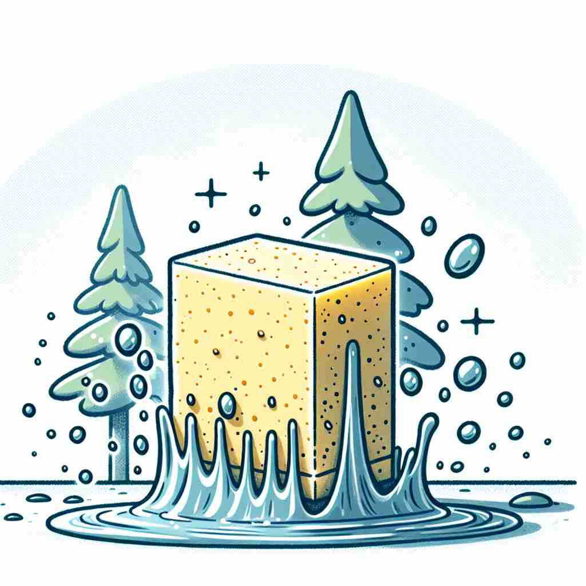

💬 The roots of the tree absorb water from the soil. 树根从土壤中吸收水分。

💬 The sponge can absorb the water very well. 海绵能很好地吸收水分。
💬 The roots of the tree absorb water from the soil. 树根从土壤中吸收水分。
💬 The sponge can absorb the water very well. 海绵能很好地吸收水分。
🧠 想象一块海绵吸水的过程。无论是知识、注意力、公司、成本还是冲击，都可以像海绵吸水一样被"吸收"（absorb）。这个核心动作贯穿了"absorb"的各种用法，帮助你更容易记住和理解它的多重含义。
🔈 [əb'zɔːb][-'sɔːb]
🗝️ v. to take in or soak up (liquid, energy, etc.) through a surface or by a process 通过表面或某种过程吸收(液体、能量等)
🎭 在一个阳光明媚的花园里，一块干燥的海绵被放入水桶中。随着时间的流逝，水缓缓进入海绵孔隙中，直到海绵变得湿透而沉甸甸。这展示了'absorb'作为吸收液体或能量的过程。
💬 A sponge absorbs water quickly. 海绵迅速吸水。
🌳 由前缀 "ab-"（表示脱离、离开）和词根 "sorb"（吸收）组成，表示 "吸收，吸引"。
💡 记忆 "absorb" 时，可以联想为 "ab + sorb"，想象将某物吸收到自身之下或内部，想到 "abandon + sorb"，形成将东西吸入体内的场景。
🗝️ v. to learn or understand fully 完全学习或理解
🎭 在温暖的书房里，一个学生正在专注地阅读一本关于历史的书。随着每一页的翻动，学生的脸上频频露出恍然大悟的神情，表明他完全理解并'absorb'了书中的知识。
💬 It took me a while to absorb all the new information. 我花了一段时间来消化所有的新信息。
🤔 像吸收液体一样"吸收"知识或信息
🗝️ v. to occupy someone's attention completely 完全吸引某人的注意力
🎭 在一个充满活力的科技展览上，一名少年被最新的虚拟现实技术深深吸引。他戴上头盔，全神贯注地沉浸在虚拟世界中，对周围的喧嚣浑然不觉，完美地体现了'absorb'使人完全专注的意义。
💬 She was completely absorbed in her book. 她完全沉浸在她的书中。
🤔 注意力被完全"吸收"
🗝️ v. to take in and incorporate as part of a larger whole 吸收并融入为整体的一部分
🎭 在一个繁忙的城市中，一个小型创业公司被一家大型企业收购。公司员工和项目被无缝融合进入母公司，成为其运营结构的一部分，这个过程正是'absorb'的体现，代表着合并和融合。
💬 The small company was absorbed by the larger corporation. 这家小公司被大型公司并购了。
🤔 将某物"吸收"并融入一个更大的整体
🗝️ v. to take on or assume (costs, expenses) 承担（费用，开支）
🎭 在一个豪华的餐馆中，经理决定为员工组织一次聚餐。他通知财务部门说，这次活动的费用将由公司来'absorb'，即公司承担所有开销。
💬 The company will absorb the cost of the repairs. 公司将承担维修费用。
🤔 像吸收液体一样"吸收"成本或费用
🗝️ v. to lessen the effect or impact of (shock, blow) 减轻（冲击、打击）的效果或影响
🎭 在一个足球比赛中，守门员迅速扑向迎面而来的球。他用双手和身体柔韧地接住了球，成功'absorb'了其冲击力，避免了进球。
💬 The car's airbags are designed to absorb the impact of a collision. 汽车的安全气囊旨在吸收碰撞的冲击力。
🤔 像吸收液体一样"吸收"冲击或打击